Mode B - Short to Driver's or Passenger's Airbag Inflator Body
MODE B -- SHORT TO DRIVER'S OR PASSENGER'S AIRBAG INFLATOR BODY (BODY GROUND)
- SHORT IN DASH SENSOR
- OPEN IN BOTH COWL SENSOR CONTACTS
NOTE: The original radio has a coded theft protection circuit. Be sure to get the customer's code number before disconnecting the battery cables.
1. Disconnect the battery negative cable and then the positive cable. Then connect the short connectors(s) (RED) to the airbag(s).
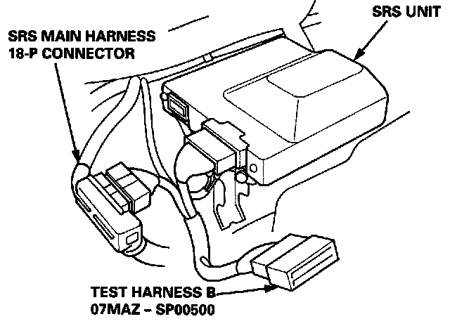
2. Connect Test Harness B between the SRS unit and SRS main harness 18-P connector.
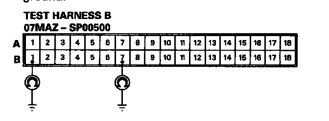
3. Reconnect the driver's airbag connector, then check continuity between the B1 terminal and body ground, and between the B7 terminal and body ground.
- If there is continuity at either terminal, go to step 6.
- If there is no continuity at either terminal,
* go to step 5 (without front passenger's airbag).
* go to step 4 (with front passenger's airbag).
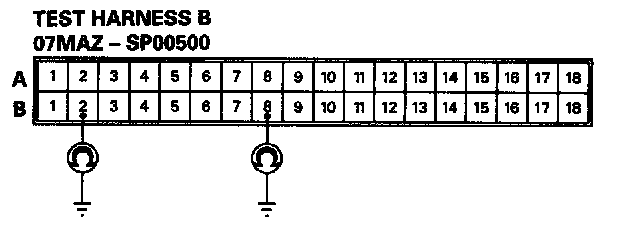
4. Reconnect the front passenger's airbag connector, then check continuity between the B2 terminal and body ground, and between the B8 terminal and body ground.
- If there is continuity at either terminal, go to step 10.
- If there is no continuity at either terminal, go to step 5.
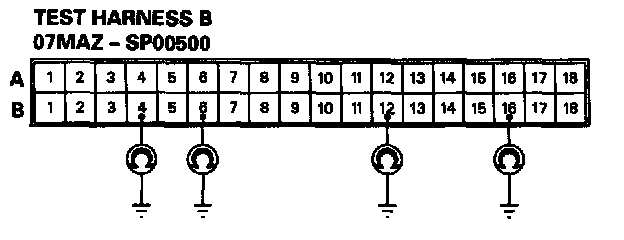
Check continuity between body ground and each terminal of both dash sensors.
- If there is continuity at any of the terminals, go to step 12.
- If there is no continuity at any terminal, go to step 13.
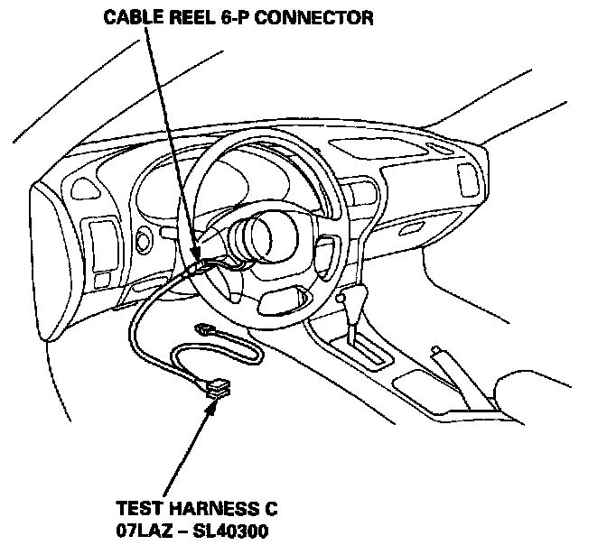
6. Disconnect the cable reel 6-P connector from the SRS main harness, then connect Test Harness C only to the cable reel side of the 6-P connector.
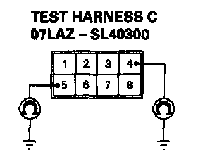
7. Check continuity between the No. 4 terminal and body ground, and between the No. 5 terminal and body ground.
- If there is continuity at either terminal, go to step 8.
- If there is no continuity at either terminal, the SRS main harness is faulty. Replace it and recheck the voltages according to the chart. SRS Indicator Light Doesn't Go Off
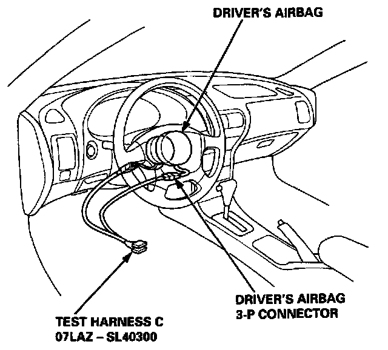
8. Disconnect the driver's airbag 3-P connector from the cable reel, then connect Test Harness C to the driver's airbag 3-P connector.
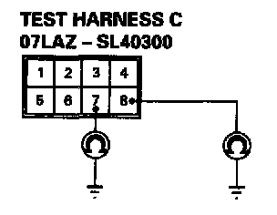
9. Check continuity between the No.7 terminal and body ground, and between the No.8 terminal and body ground.
- If there is continuity at either terminal, the driver's airbag inflator is faulty. Replace it and recheck the voltages according to the chart.
- If there is no continuity at either terminal, the cable reel is faulty. Replace it and recheck the voltages according to the chart. SRS Indicator Light Doesn't Go Off
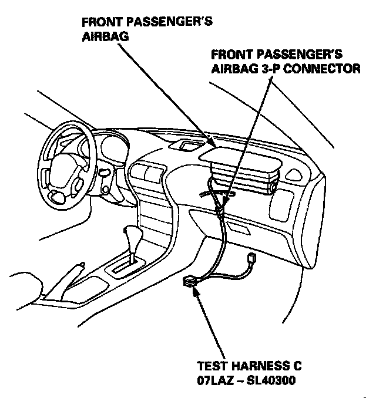
10. Disconnect the front passenger's airbag 3-P connector from the SRS main harness, then connect Test Harness C to the airbag side of the connector.
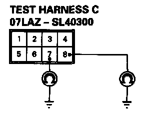
11. Check continuity between the No.7 terminal and body ground, and between the No.8 terminal and body ground.
- If there is continuity at either terminal, the front passenger's airbag inflator is faulty. Replace it and recheck the voltages according to the chart.
- If there is no continuity at either terminal, the SRS main harness is faulty. Replace it and recheck the voltages according to the chart. SRS Indicator Light Doesn't Go Off
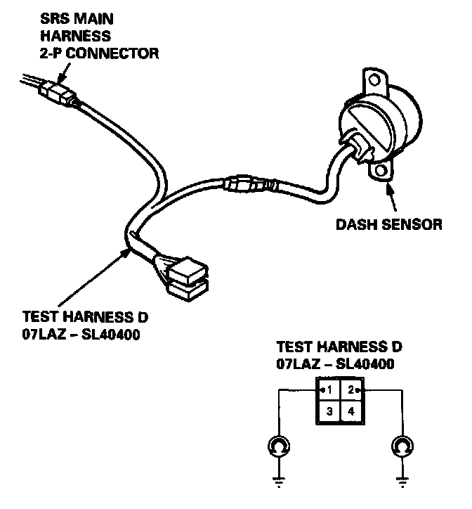
12. Connect Test Harness D between the dash sensor and SRS main harness 2-P connector. Check continuity between the No.1 terminal and body ground, and between the No.2 terminal and body ground.
- If there is continuity at either terminal, the dash sensor is faulty. Replace it and recheck the voltages according to the chart.
- If there is no continuity at either terminal, the SRS main harness is faulty. Replace it and recheck the voltages according to the chart. SRS Indicator Light Doesn't Go Off
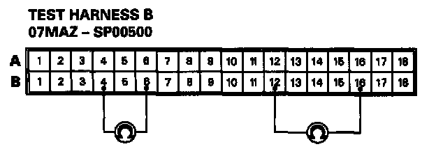
13. Measure the resistance between the left dash sensor terminals 812 and 816, and between the right dash sensor terminals B4 and B6.
- If resistance is 3.8 - 4.2 K(ohms) for both sensors, the SRS unit is faulty. Substitute a known-good SRS unit and recheck the voltages according to the chart.
- If resistance is less than 3.8 K(ohms) for either sensor, go to step 14.
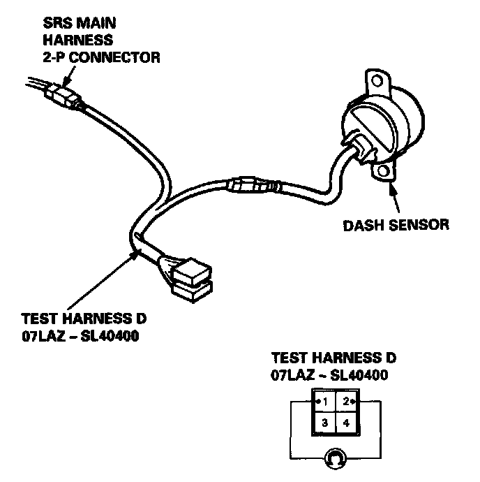
14. Connect Test Harness D between the dash sensor and SRS main harness 2-P connector. Measure the resistance between the No.1 terminal and No.2 terminal.
- If resistance is 3.8 - 4.2 K(ohms), the SRS main harness is faulty. Replace it and recheck the voltages according to the chart.
- If resistance is less than 3.8 K(ohms), the dash sensor is faulty. Replace it and recheck the voltages according to the chart. SRS Indicator Light Doesn't Go Off